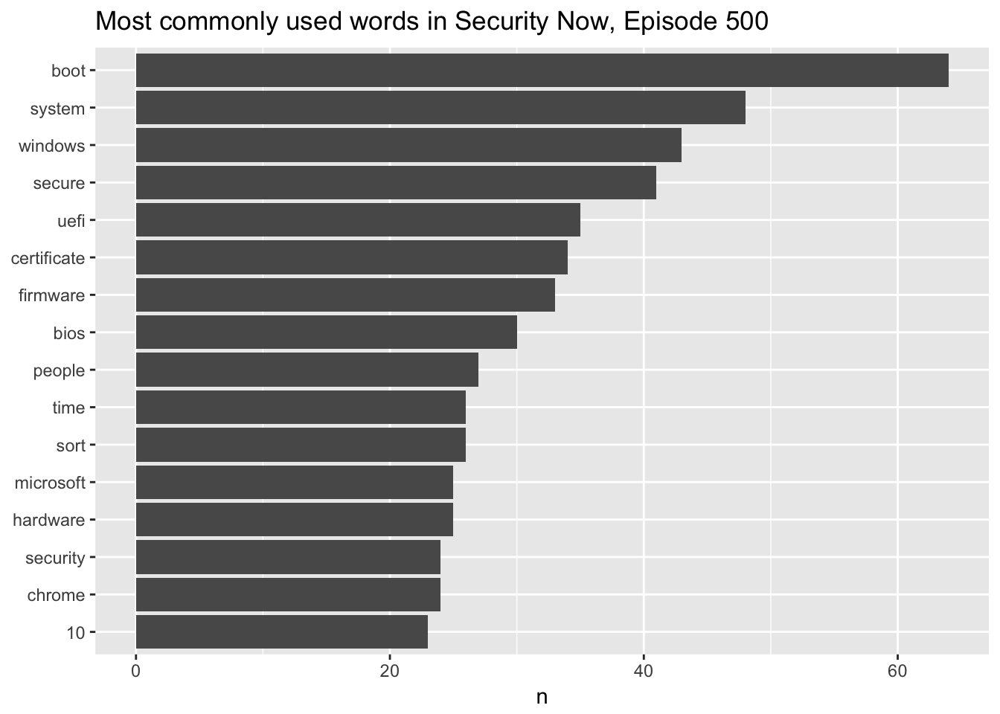
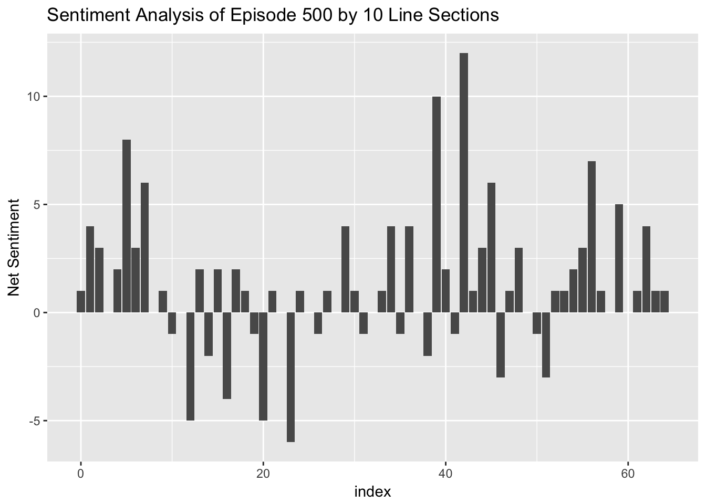
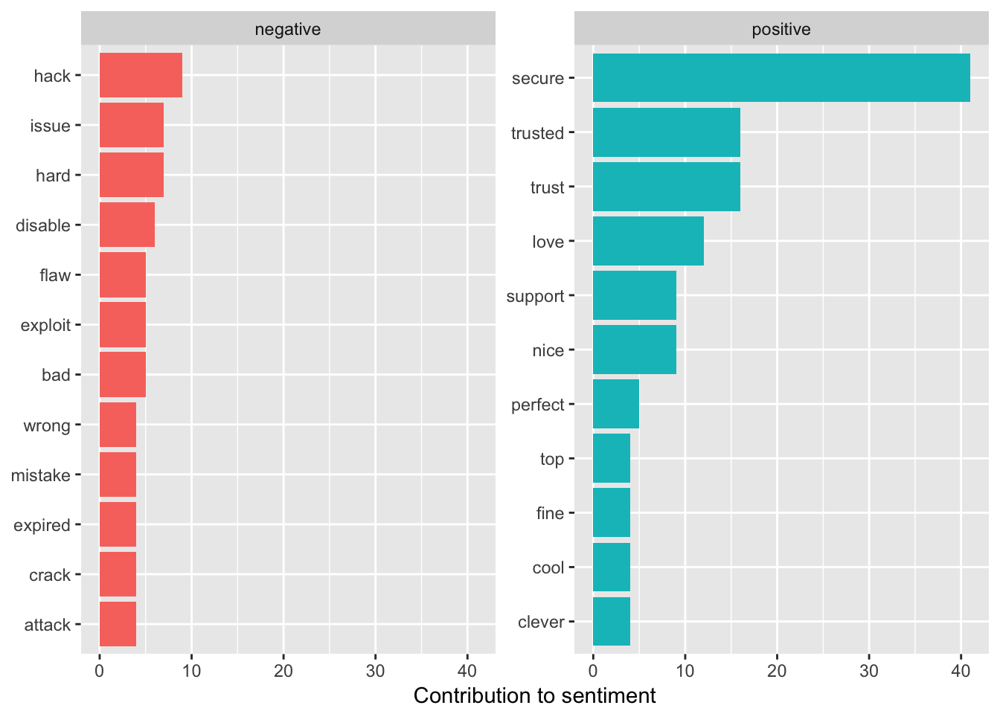

I wanted to try my hand at some text mining using the tidytext package, and I was wondering what I could look at. I love the podcast Security Now! by Steve Gibson and Leo Laporte, and I’ve always wondered if there was a way to build a good index of their podcast.
I used the tidyverse packages and tidytext by David Robinson. He and Julia Silge wrote the book from which most of these methods came from.
library(dplyr)##
## Attaching package: 'dplyr'## The following objects are masked from 'package:stats':
##
## filter, lag## The following objects are masked from 'package:base':
##
## intersect, setdiff, setequal, unionlibrary(tidytext)
library(ggplot2)
library(tidyr)I downloaded the episode transcripts from GRC.com.
Obtaining Text
DIRECTORY <- "/Volumes/WD_6GB_Chings/media/Books/securitynow/shows/"
# change the i to go from the first show number you want to the last show number. As of 1 July 2017, the most recent show is #618.
for(i in 500:599) {
shortname <- paste0("sn-", i, ".txt")
showname <- paste0("https://www.grc.com/sn/", shortname)
print(shortname)
download.file(showname, destfile = paste0(DIRECTORY, shortname), method = "curl")
}I loaded an example file and put it into a tibble.
DIRECTORY <- "/Volumes/WD_6GB_Chings/media/Books/securitynow/shows/"
# list.files(DIRECTORY)
sn_500 <- readLines(paste0(DIRECTORY, "sn-500.txt"))
sn_500_df <- data_frame(linenumber = 1:length(sn_500), text = sn_500, episode = 500L)Most Commonly Used Words
Then I loaded the stop words data (words like “the”, “of” that are commonly used but not very meaningful). I added on Leo and Steve’s names and the word yeah which seemed to be used a lot.
data("stop_words")
custom_stop_words <- bind_rows(data_frame(word = c("leo", "steve", "yeah"),
lexicon = rep("custom", 3)),
stop_words)Then I used the unnest_tokens() function to separate the lines into words, removed the stop words, and counted the most commmon words. The result was the figure below showing the most common words in this episode.
sn_500_df %>% unnest_tokens(word, text) %>%
anti_join(custom_stop_words) %>%
count(word, sort = TRUE) %>%
filter(n>20) %>%
mutate(word = reorder(word, n)) %>%
ggplot(aes(x = word, y = n)) +
geom_col() +
xlab(NULL) +
coord_flip() +
ggtitle("Most commonly used words in Security Now, Episode 500")## Joining, by = "word"
Sentiment Analysis
Sentiment Analysis looks at the number of positive words and negative words used in a section of text. This can vary over the course of the text. I performed a sentiment analysis on the episode.
sn_500_df %>% unnest_tokens(word, text) %>%
anti_join(custom_stop_words) %>%
inner_join(get_sentiments("bing")) %>%
count(episode, index = linenumber %/% 10, sentiment) %>%
spread(sentiment, n, fill = 0) %>%
mutate(netsentiment = positive - negative) %>%
ggplot(aes(x = index, y = netsentiment)) +
geom_col() +
labs(title = "Sentiment Analysis of Episode 500 by 10 Line Sections",
y = "Net Sentiment")## Joining, by = "word"
## Joining, by = "word"
I also looked at the most used positive and negative words. First I assigned sentiments then counted how often they were used. Some words do not have sentiments associated with them so this is only a partial list of the words used in the episode.
bing_word_counts <- sn_500_df %>%
unnest_tokens(word, text) %>%
anti_join(custom_stop_words, by = "word") %>%
arrange(linenumber) %>%
inner_join(get_sentiments("bing"), by = "word") %>%
count(word, sentiment, sort = TRUE) %>%
ungroup()Then I plotted the most commonly used sentiments by positive or negative sentiment.
bing_word_counts %>%
group_by(sentiment) %>%
top_n(10) %>%
ungroup() %>%
mutate(word = reorder(word, n)) %>%
ggplot(aes(word, n, fill = sentiment)) +
geom_col(show.legend = FALSE) +
facet_wrap(~sentiment, scales = "free_y") +
labs(y = "Contribution to sentiment",
x = NULL) +
coord_flip()## Selecting by n
Discussion
This episode was mostly about Windows Secure Boot, so it’s no surprise that UEFI and Windows were among the top words. It’s also possibly the reason secure was one of the most commonly used words but the show is about computer security, so I would guess that this is a commonly used word anyway.
The sentiment analysis showed that the episode varies in sentiment as it goes along and can be sometimes very positive. Here’s the part from 420-430 that has the peak positive sentiment. He’s explaining the history of the UEFI BIOS and how it’s so powerful.
sn_500[420:430]## [1] ""
## [2] "STEVE: Right, right. And so in Lotus I remember they were programming the video RAM directly because they just couldn't afford the overhead of the BIOS. The BIOS could have allowed them to do it. But the things they wanted to do, scrolling quickly, horizontally and vertically; moving, like, highlight bars around the screen. It just couldn't do that. So they had to bypass the BIOS and go direct."
## [3] ""
## [4] "So many older systems are still BIOS based. The BIOSes have lived for decades, mostly because you could bypass it. You would use the BIOS to essentially power the system up. It would initialize the hardware. It would sort of settle things down. Then it would look through a list of possible boot devices, checking them in sequence for a sector that said it had access to a bootable partition, and it would go and see if it could boot the partition. If so, it would run that code, and off you'd go. The operating system then, rather than using the BIOS - for example, DOS actually did use the BIOS. But the first thing Windows did was say, okay, fine, get out of the way. And Windows brought its own drivers, essentially to talk directly to the hardware."
## [5] ""
## [6] "So this was the situation up until probably, what, the mid-1990s or so, when the BIOS began to show its age. Systems were evolving. We were beginning to want much more capability. People wanted to be able to boot their system over the network remotely. They wanted, corporate IT wanted to be able to do an inventory of what was plugged into the motherboard without even talking to the operating system, actually have the motherboard be smart enough. Motherboards started to want to be able to monitor the voltages of their power supplies, and the current. They had multiple fans, and so they wanted to control temperature in various areas. They had fancy RAID arrays that they needed to support."
## [7] ""
## [8] "Essentially, the very modest platform that the PC XT originally was, that the BIOS was able to service, that platform just exploded. So we needed something new. And so the so-called EFI then became the unified extensible firmware interface, UEFI, which is now the state of the art in firmware. Some people say the \"UEFI BIOS,\" although technically that's not right because the BIOS is the BIOS, and UEFI is a different firmware than the BIOS firmware. But today's UEFI offers a vast array of services. There's essentially almost an operating system within the motherboard to manage the modern complexity of all the peripherals. There's an ACPI which is the power control that allows various power-down states. And all that has to be communicated and coordinated with the hardware so that the motherboard understands how to do that to all of its hardware."
## [9] ""
## [10] "So you still need sort of a central point of responsibility. And as I mentioned, there's fans and voltage and current monitoring, remote network booting, just all the chassis management and everything. So the UEFI has just exploded in size. It's really left the original BIOS way behind. So it got to the point where it was time to talk about security. And the UEFI has gone through a number of versions. It was at 2.2 that we first really got what was known as \"Secure Boot.\" And in the same way that the iPhone depends upon its hardware in order to provide absolute security, the Secure Boot is the same way."
## [11] ""Next Steps
I’d like to take a larger sample of episodes and re-run this analysis to see how things vary over time. He does some Listener Feedback episodes, and I wonder if the sentiment is different during those episodes?
Conclusion
Not much takeaway here yet since I only looked at one episode. The tidytext package does make it very easy to do natural language processing and analysis.